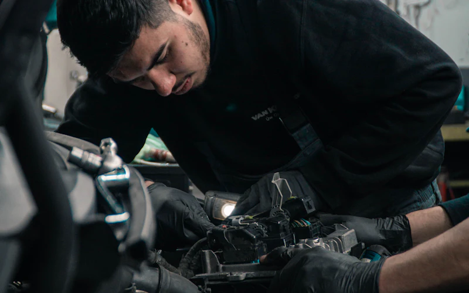

Blog · Celya
The field, not the theory.
We call, we measure, we write it down. What Belgian garages, restaurants, practices and independent professionals live through on the phone — and how to stop losing customers by letting it ring.
“I’ll call them back later”
When you work alone, nobody picks up for you. You tell yourself “I’ll call back”, the caller tells himself “he’ll call back” — and both of you wait. The real cost of missed calls, and what changes when someone answers on your behalf. Read the article →“Press 1 to book an appointment”
A phone menu doesn’t answer calls: it puts them in a queue and routes them to the person who was already busy. Why patients hang up, what Belgian practices told us — and what has changed since. Read the article →The phone always rings at the worst moment
In a restaurant, the phone rings at 12:30 and at 19:45 — exactly when nobody can pick up. What we heard from Belgian restaurant owners, and what we built for them. Read the article →
We called dozens of Belgian garages. 8 in 10 didn’t pick up.
We dialled dozens of independent garages during business hours, like any motorist would. Here are the numbers — 80% of calls unanswered — and what they mean for a workshop. Read the article →Roughly one article a month — always from the field.